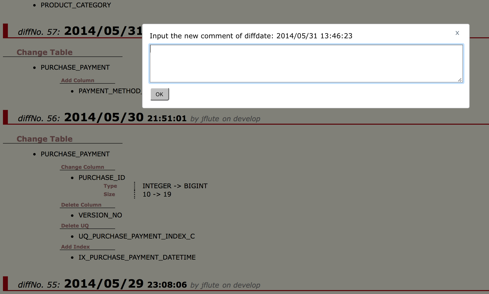
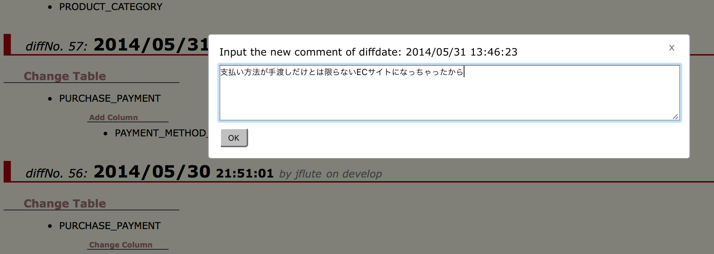
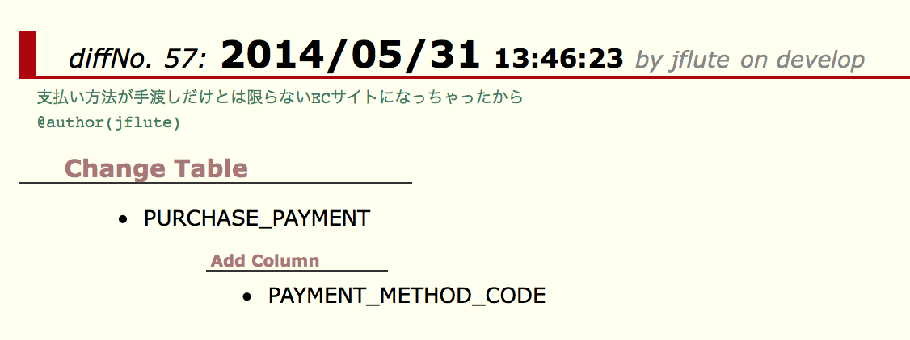
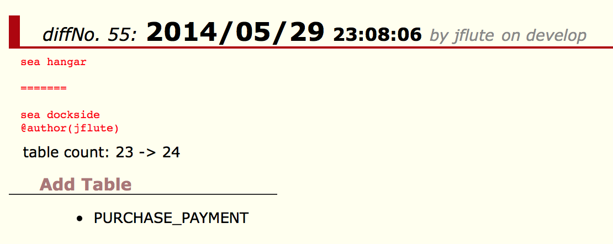

Hacomment (はこめんと) on Intro
${indexlist}Hacommentとは？
ズバリなに？
HistoryHTMLのそれぞれのDB変更履歴に対して、HistoryHTMLで履歴コメントを追加・修正する、DBFlute Intro の機能 です。
複数人で追加・修正してもgitコンフリクトを起こさずマージできる のが特徴です。
DecommentのHistoryHTML版と言って良いでしょう。
ハコメントのダイアログ 
{kind=link}
どんなことを書く？
例えば、このようなものを書いておくと良いでしょう。
- DB変更の理由
- どんな背景があって、このDB変更をしたのか？
- スプリント名
- そのDB変更をしたスプリント名などフェーズがわかるもの
Introはどう関係しているの？
DBFlute Introが、入力された履歴コメントを受け付ける中継サーバーとなって、DBFluteクライアント内に保存をします。 詳しくは、Decommentのページを参考に。
Hacommentの使い方
DBFlute Introを起動
manage.sh|bat の 88 (intro) を実行して、Introを起動しましょう。
HistoryHTMLを起動
Intro の Operate 画面の、Open the table history ... リンクをクリックします。
Operate画面のドキュメントリンクあり

すると、HistoryHTMLが表示されます。
HistoryHTMLのExample

そもそも、まだ HistoryHTML が存在しないのであれば、単純にDB変更がまだないので、時を待ちましょう。
ハコメントの登録
HistoryHTML上の "diffNo" 付近をクリックすると、ダイアログが開きます。
テキストエリアで何か入力して...
ハコメントのダイアログで入力 
{kind=link}
OKするとハコメントが登録され、すぐに反映されます。
ハコメントが表示された！ 
{kind=link}
gitでpieceファイルをコミット
登録されたハコメントは、DBFluteクライアント内に "pieceと呼ばれるファイル" (詳しくは後述) で保存され、そのpieceファイルをgitでコミットすることで他の人に共有されます。
ただし、この時点では、Intro経由で HistoryHTML を開いたときだけハコメント (追加した分のコメント) が表示されます。 ブラウザで直接HistoryHTMLを開いても表示されるようになるのは、まだこのあと "Docタスク" 叩いた後です。
DocタスクでHistoryHTMLに固定化
ブラウザで直接HistoryHTMLを開いても表示されるようにするためには、Docタスク 叩きます。 多くの人が、HistoryHTMLを閲覧するときはブラウザで直接開くと想定されるので、これにて本当に皆が参照する共有コメントとなります。
ただ、チーム開発の場合、DocタスクはDB変更専用のブランチ (alter_dbブランチなど) で実行するような運用になっていると思いますので、わざわざハコメントのために Doc を叩くのではなく、自然の流れに任せる で良いかと思います。 コメントですので、気付いたら反映されているくらいでいいかと。
コンフリクトするとどうなる？
gitコンフリクトはせず業務的なコンフリクト
同じテーブル同じカラムのコメントを複数人で同時に修正しても、gitコンフリクトはしないように作られていますが、 (当然のことながら)業務的なコンフリクトは発生します。
HistoryHTML上でコンフリクトの表現
HistoryHTMLのコメント上で、コンフリクトが表現されます。
- コメント表示が "赤字" になる
- デリミタ "=======" つなぎで複数のコメントが連結表示される
ハコメントのコンフリクト 
{kind=link}
コンフリクトの解消方法
クリックすれば、同じようにダイアログが開き、同じ要領でそのままコンフリクトしたコメントを修正することができます。 (自動マージは一切されず、必ず人間が目で見て修正する方式です)
ハコメントはどう保存される？
DBFluteクライアントに保存される
DBFluteクライアントの schema/hacomment にテキストファイルとして保存されます。
e.g. @Directory
[Project Root]
|-...
|
|-dbflute_maihamadb // client
| |-dfprop
| |-...
| |-schema
| | |-hacomment // hacomment resources
| | | |
| | | |-pickup // decomment pickup
| | | | |-hacomment-pickup.dfmap
| | | |
| | | |-piece // decomment pieces
| | | | |-hacomment-piece-diffdate20140531134623-20180520-152039-490-jflute-6bdd7dc4.dfmap
| | | | |-hacomment-piece-diffdate20150925164239-20180520-153244-270-jflute-9bea9041.dfmap
| | | | |-...
| |-manage.bat
| |-manage.sh
|
|-...
ハコメントごとにpieceファイルが保存される
一つ一つのハコメントを piece と呼んでいます。 (一回のOKボタンに付き、一ファイルが作成されます)
pieceファイルは、schema/hacomment/piece 配下に保存されます。
e.g. @Directory
[Project Root]
|-...
|
|-dbflute_maihamadb // client
| |-dfprop
| |-...
| | |-decomment // decomment resources
| | | |
| | | |-pickup // decomment pickup
| | | | |-decomment-pickup.dfmap
| | | |
| | | |-piece // decomment pieces
| | | | |-hacomment-piece-diffdate20140531134623-20180520-152039-490-jflute-6bdd7dc4.dfmap
| | | | |-hacomment-piece-diffdate20150925164239-20180520-153244-270-jflute-9bea9041.dfmap
| | | | |-...
| |-manage.bat
| |-manage.sh
|
|-...
Docタスクでpickupファイルが作成・更新される
pieceたちを集荷した情報を pickup と呼んでいます。
pickupファイルは、Docタスクを叩くと schema/hacomment/pickup 配下に保存されます。
e.g. pickup for hacomment @Directory
[Project Root]
|-...
|
|-dbflute_maihamadb // client
| |-dfprop
| |-...
| | |-hacomment // hacomment resources
| | | |
| | | |-pickup // decomment pickup
| | | | |-hacomment-pickup.dfmap
| | | |
| | | |-piece // hacomment pieces
| | | | |-// pieces are deleted
| |-manage.bat
| |-manage.sh
|
|-...
pickupには、pieceファイルたちの情報がすべて含まれています。 これらの情報は HistoryHTML にも反映されるので、ブラウザで直接 HistoryHTML を開いたときでも、登録されたハコメントたちが表示されるようになります。
一方で、集荷されたpieceファイルたちは不要になりますので削除されます。
Hacommentの環境構築
必要なDBFluteのバージョン
DBFlute と DBFlute Intro が以下のバージョン以降である必要があります。
- DBFlute
- 1.1.8 (2018/5/19リリース)
- DBFlute Intro
- 0.2.1 (2018/5/20リリース)
DBFluteが先にある場合
すでに DBFlute の環境が整っている場合は、DBFluteタスクの manage.sh|bat の 88 (intro) を実行すれば、プロジェクト直下に DBFlute Intro がダウンロードされ、自動的に起動します。
e.g. DBFlute Intro のjarファイルを dbflute-intro ディレクトリ配下に @Directory
[Project Root]
|-...
|
|-dbflute_maihamadb // client
| |-dfprop
| |-...
| |-manage.bat
| |-manage.sh
|
|-mydbflute
| |-dbflute-1.1.8 // engine
|
|-dbflute-intro.jar // downloaded by manage task
|-...
一度ダウンロードしておけば、ダウンロードは発生しないので、実行するだけのコマンドとして manage の 88 が利用できます。
DBFlute Introが先にある場合
DBFlute Intro の機能を使って、DBFluteをセットアップしましょう。
DBFlute Introのアップグレード
削除してダウンロードです。
- dbflute-intro.jar を削除
- manage.sh|bat の 88 (intro) を実行 (jarがなければダウンロードされる)
DBFlute Introはgitignoreする？
どちらでも構いません。ディベロッパーからすれば、manage を叩いて起動することには変わりはないので、どちらであっても利用してる分には意識しません。
Introのバージョンを強制させたい場合は、コミット対象にしておけば横展開が簡単にはあります。 ただ、それなりのサイズではあるので、やはりignoreにしてIntroのアップグレードは各自に任せるのも良いでしょう。 (LastaFluteのExampleでは、デフォルトでignoreになっています)
DB変更履歴を大切にしよう
DB変更の経緯を知ることで、いまのDB構造が理解しやすくなります。
DBはおいそれと修正できないものです。なので、中には "仕方なくこういうDB変更になった" というのもあるでしょう。ソースコードであれば、そういうものはコメントで残しておきやすいですが、 DB変更というイベントに対してのコメントを書く場所はあまりありません。
テーブルやカラムのDBコメントも同じですが...
DB変更履歴にもコードと同じようにコメントしておきましょう！